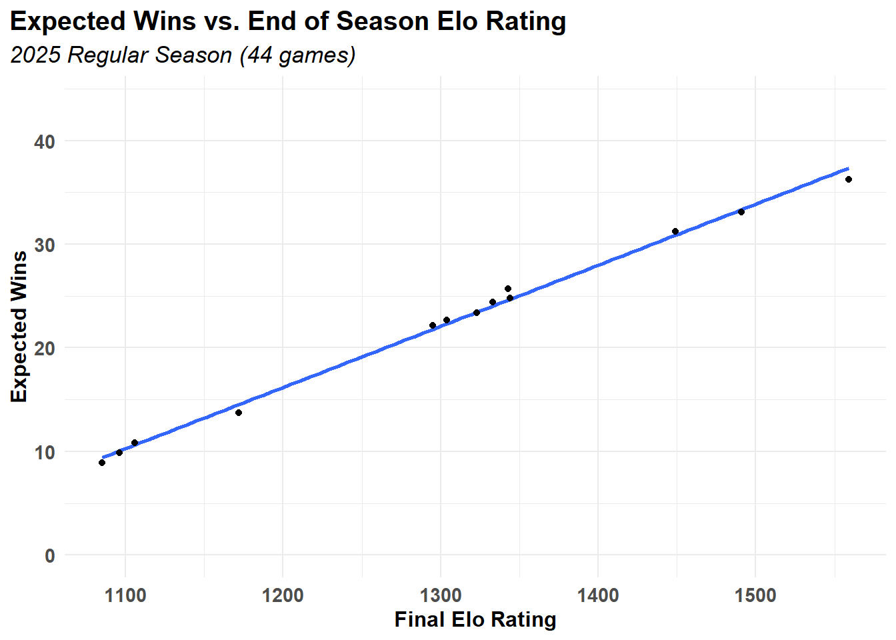
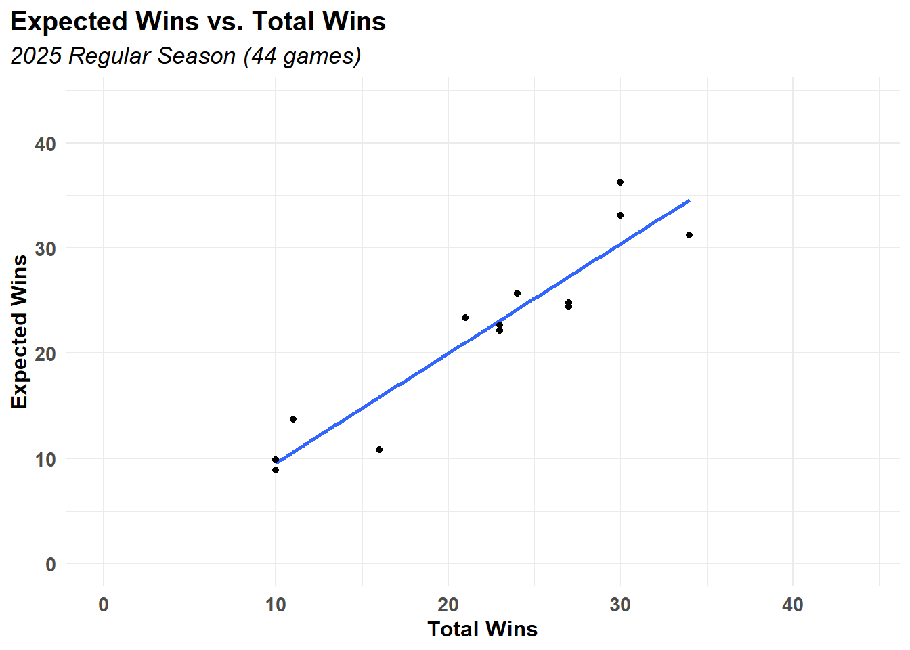
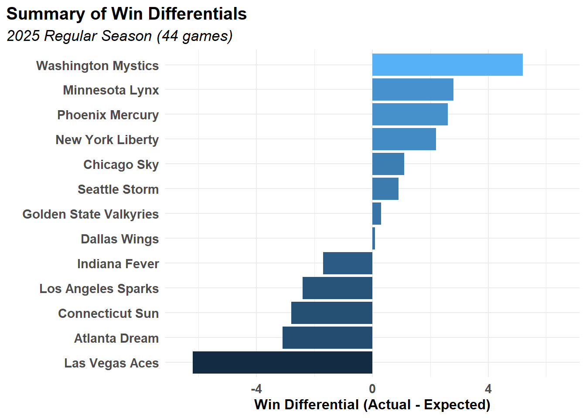

season <- as.numeric(2025)
url <- "https://raw.githubusercontent.com/kailot-harris/DATA-607-Project-1-WNBA-ELO-Ratings/refs/heads/main/wnba_elo_summary_2025.csv"
csv_data <- readr::read_csv(file = url,
show_col_types = FALSE,
progress = FALSE)DATA 607 - Assignment 5B - Codebase
Introduction and Overview
This assignment is an extension of Project 1, in which Elo ratings were calculated for 13 WNBA teams competing in the 2025 WNBA regular season. Here, the output of Project 1 (a .CSV file containing season-end Elo ratings, average opponent Elo ratings, and total wins) acts as the input for this assignment, where expected win totals will be calculated for each team. Expected wins will be calculated using a methodology similar to Arpad Elo’s original approach, but modified for the NBA regular season. Probabilities are calculated via a sigmoid function:
\[ \sigma(x) = \frac{1}{1+10^\frac{-x}{400}} \]
From there, individual win probabilities are calculated according to:
\[P{(A>B)} = \sigma(R_A - R_B) \]
The error, for a game in which team A is the winner, is calculated as the probability of B winning:
\[E_{(w=A)} = P(B>A) = \sigma(R_B-R_A)\]
The new rankings for each team are calculated via update functions, where the \(t+1\) index of the vector is the sum of the \(t\) index and the update value:
\[R_A^{(t+1)} = R_A^{(t)} + K*E_{(w=A)}\]
\[R_B^{(t+1)} = R_B^{(t)} - K*E_{(w=A)}\]
Anticipated challenges include data transformations, where maintaining a tidy data frame will be most conducive to downstream analysis, and data visualization, where constructing meaningful representations of the data may be unwieldy. Additionally, manipulating summary data for the 2025 regular season, without the granular game-by-game data, may prove challenging.
Adaptation
In the original assignment, semi-structured data for a chess tournament was provided for analysis under the Elo methodology. Outputs from the first project consisted of a .CSV file with chess player information: name, state, total points, pre-rating, and average opponent pre-rating. Outputs for the first phase of this assignment involved a .CSV file with the following data: WNBA team, In this modified assignment, data for the 2025 WNBA regular season will be used to furnish expected win predictions for each WNBA team name, total wins in 2025, final Elo rating, and average opponent Elo rating.
Codebase
Data Import
clean_data <- janitor::clean_names(csv_data)
games_2025 <- as.integer(44)
df <- clean_data |>
mutate (rel_elo = final_elo-avg_opp_elo,
win_prob = 1/(1+(10^(-rel_elo/400))),
e_wins = round(games_2025 * win_prob,2),
diff_wins = round(total_wins - e_wins,1)
) |>
arrange(desc(diff_wins))
knitr::kable(df, caption = "Summary of Elo Results")| team | total_wins | final_elo | avg_opp_elo | rel_elo | win_prob | e_wins | diff_wins |
|---|---|---|---|---|---|---|---|
| Washington Mystics | 16 | 1106 | 1301 | -195 | 0.2455460 | 10.80 | 5.2 |
| Minnesota Lynx | 34 | 1449 | 1294 | 155 | 0.7093546 | 31.21 | 2.8 |
| Phoenix Mercury | 27 | 1333 | 1295 | 38 | 0.5544694 | 24.40 | 2.6 |
| New York Liberty | 27 | 1344 | 1300 | 44 | 0.5629847 | 24.77 | 2.2 |
| Chicago Sky | 10 | 1085 | 1324 | -239 | 0.2016853 | 8.87 | 1.1 |
| Seattle Storm | 23 | 1295 | 1293 | 2 | 0.5028782 | 22.13 | 0.9 |
| Golden State Valkyries | 23 | 1304 | 1293 | 11 | 0.5158250 | 22.70 | 0.3 |
| Dallas Wings | 10 | 1096 | 1311 | -215 | 0.2248471 | 9.89 | 0.1 |
| Indiana Fever | 24 | 1343 | 1284 | 59 | 0.5841010 | 25.70 | -1.7 |
| Los Angeles Sparks | 21 | 1323 | 1301 | 22 | 0.5316183 | 23.39 | -2.4 |
| Connecticut Sun | 11 | 1172 | 1309 | -137 | 0.3124618 | 13.75 | -2.8 |
| Atlanta Dream | 30 | 1491 | 1298 | 193 | 0.7523150 | 33.10 | -3.1 |
| Las Vegas Aces | 30 | 1559 | 1291 | 268 | 0.8238615 | 36.25 | -6.2 |
over_perform <- head(df,5) |>
select(team, total_wins, expected_wins = e_wins, diff_wins)
knitr::kable(over_perform, caption = "Top 5 Overperforming WNBA Teams (2025)")| team | total_wins | expected_wins | diff_wins |
|---|---|---|---|
| Washington Mystics | 16 | 10.80 | 5.2 |
| Minnesota Lynx | 34 | 31.21 | 2.8 |
| Phoenix Mercury | 27 | 24.40 | 2.6 |
| New York Liberty | 27 | 24.77 | 2.2 |
| Chicago Sky | 10 | 8.87 | 1.1 |
under_perform <-tail(df,5) |>
select(team, total_wins, expected_wins = e_wins, diff_wins) |>
arrange(diff_wins)
knitr::kable(under_perform, caption = "Top 5 Underperforming WNBA Teams (2025)")| team | total_wins | expected_wins | diff_wins |
|---|---|---|---|
| Las Vegas Aces | 30 | 36.25 | -6.2 |
| Atlanta Dream | 30 | 33.10 | -3.1 |
| Connecticut Sun | 11 | 13.75 | -2.8 |
| Los Angeles Sparks | 21 | 23.39 | -2.4 |
| Indiana Fever | 24 | 25.70 | -1.7 |
Data Visualization
theme_standard <- function(){
theme_minimal() +
theme(
plot.title.position = "plot",
plot.caption.position = "plot",
plot.title = element_text(size = 15, face = "bold"),
plot.subtitle = element_text(size = 13, face = "italic"),
axis.text.y = element_text(size = 11, face = "bold"),
axis.text.x = element_text(size = 11, face = "bold"),
axis.title.y = element_text(size = 12, face = "bold"),
axis.title.x = element_text(size = 12, face = "bold")
)
}df |>
ggplot(aes(x=final_elo, y=e_wins)) +
geom_smooth(method = "lm", se = FALSE) +
geom_point(show.legend = FALSE) +
labs(title = "Expected Wins vs. End of Season Elo Rating",
subtitle = "2025 Regular Season (44 games)",
x = "Final Elo Rating",
y = "Expected Wins",
) +
theme_standard() +
scale_y_continuous(limits = c(0,44))
df |>
ggplot(aes(x=total_wins, y=e_wins)) +
geom_smooth(method = "lm", se = FALSE) +
geom_point(show.legend = FALSE) +
labs(title = "Expected Wins vs. Total Wins",
subtitle = "2025 Regular Season (44 games)",
x = "Total Wins",
y = "Expected Wins",
) +
theme_standard() +
scale_y_continuous(limits = c(0,44)) +
scale_x_continuous(limits = c(0,44))
df |>
mutate(team = reorder(team, diff_wins)) |>
ggplot(aes(x=team, y=diff_wins, fill=diff_wins)) +
geom_col(show.legend = FALSE) +
coord_flip() +
labs(title = "Summary of Win Differentials",
subtitle = "2025 Regular Season (44 games)",
x = "",
y = "Win Differential (Actual - Expected)",
) +
theme_standard() +
scale_y_continuous(limits = c(-6.5,6.5))